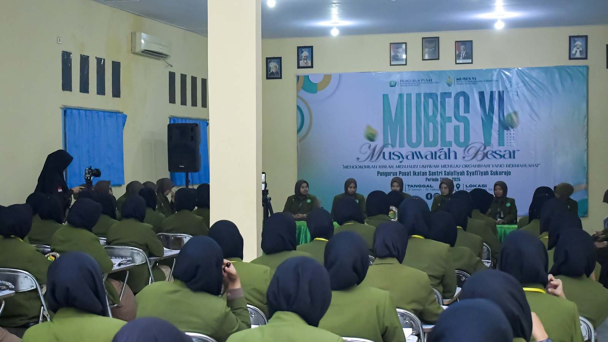
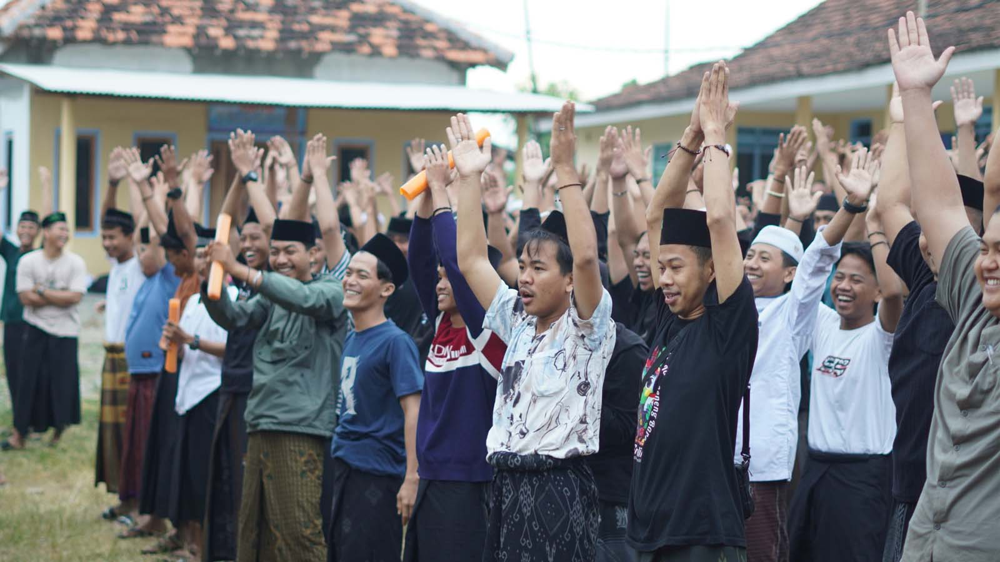

Galeri IKSASS
Galeri ini merangkum nilai, tradisi, dan jejak kebersamaan. Pilih kategori untuk menelusuri dokumentasi dan hikmah.
Akar
Proses
Wadah
Hikmah

Akar
Ke-Pesantrenan
Akar tradisi, adab, dan suasana pesantren yang membentuk langkah.

Proses
Ke-Ilmu-an
Proses belajar, ngaji, dan laku keilmuan yang menghidupkan makna.

Wadah
Ke-IKSASS-an
Wadah ukhuwah, khidmah, dan kerja-kerja kolektif alumni.
Hikmah
Dawuh
Dawuh dan petuah sebagai penuntun adab dan arah gerak.